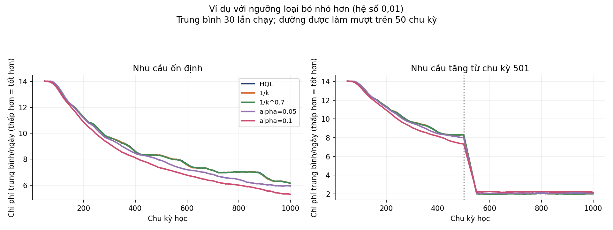
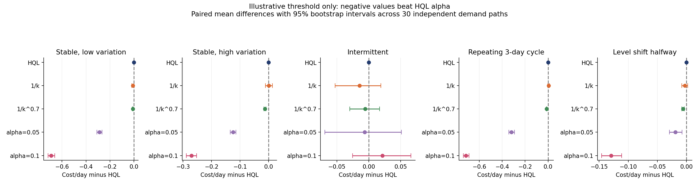
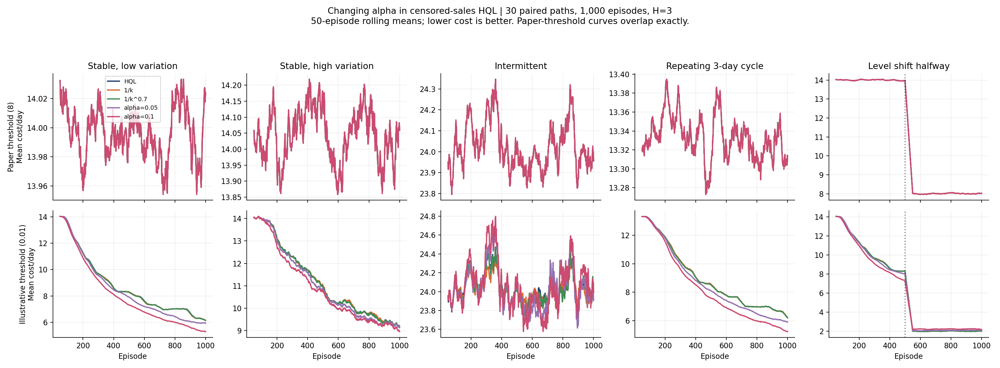

Đã chạy 5 kịch bản × 5 công thức × 30 chuỗi nhu cầu × 1.000 chu kỳ, cho mỗi ngưỡng loại bỏ. Mỗi chu kỳ 3 ngày; sức chứa 20; phí lưu kho 1/đơn vị/ngày; phạt thiếu hàng 4/đơn vị. Đo tổng chi phí lưu kho và thiếu hàng, càng thấp càng tốt.
Thuật toán chỉ thấy lượng bán được; nhu cầu thật chỉ được bộ mô phỏng dùng để chấm điểm. Hàng còn lại bị loại bỏ cuối mỗi chu kỳ; không có chi phí đặt hàng, giá trị thu hồi hoặc phí hủy bổ sung. Không áp dụng trực tiếp cho mô hình giữ hàng qua chu kỳ.
Để minh họa tác động của alpha, chạy thêm cùng thí nghiệm với hệ số ngưỡng 0,01 thay vì 8. Đây là biến thể minh họa, không có bảo đảm của bài báo. Hệ số này được cố định trước khi chạy kết quả chính và dùng chung cho 5 công thức; chưa tinh chỉnh tối ưu cho từng công thức.

| Demand | HQL | 1/k | 1/k^0.7 | alpha=0.05 | alpha=0.1 |
|---|---|---|---|---|---|
| Stable, low variation | 8.798 | 8.790 | 8.790 | 8.511 | 8.108 |
| Stable, high variation | 11.191 | 11.192 | 11.179 | 11.066 | 10.921 |
| Intermittent | 24.034 | 24.019 | 24.028 | 24.027 | 24.055 |
| Repeating 3-day cycle | 8.969 | 8.974 | 8.957 | 8.650 | 8.253 |
| Level shift halfway | 6.292 | 6.290 | 6.287 | 6.274 | 6.163 |

Biểu đồ trên: chấm nằm bên trái 0 nghĩa là chi phí thấp hơn HQL cùng ngưỡng. Thanh ngang là khoảng tin cậy bootstrap 95% của chênh lệch theo cặp. Các khoảng này chưa điều chỉnh cho việc so sánh nhiều phương án.

Hàng trên dùng ngưỡng gốc 8, hàng dưới dùng ngưỡng minh họa 0,01. Các đường là chi phí/ngày trung bình trượt trên 50 chu kỳ. Đường dọc ở chu kỳ 500 đánh dấu thay đổi demand. Không khởi động lại thuật toán sau thay đổi.
Bản chạy theo lô đã khớp Q, Running Set và chi phí với mã HQL đang có cho cả 5 lịch alpha qua 1.200 phép đối chiếu theo chu kỳ, có tình huống buộc Delayed Bellman đi qua nhiều ngày. Riêng alpha gốc còn khớp 120 chu kỳ với bản HQL không thay đổi. Bộ chấm tính hành động tối ưu bằng quy hoạch động chính xác trên cùng lưới để theo dõi việc loại nhầm; đáp án này không đưa vào thuật toán học.
Đây là thử nghiệm online từ đầu, chưa tìm tham số tốt nhất và chưa dùng dữ liệu bán hàng thực tế. Không kết luận công thức thắng trong ví dụ sẽ thắng ở mọi ngành hàng. Bộ mô phỏng dùng lưới nguyên 0..20 của ứng dụng giảng dạy hiện có, không phải tái lập đầy đủ gói thí nghiệm của tác giả.
Tệp: Bảng kết quả CSV · Cấu hình và kiểm tra. Mỗi tệp NPZ lưu kết quả từng chu kỳ và chuỗi demand để tái kiểm tra.